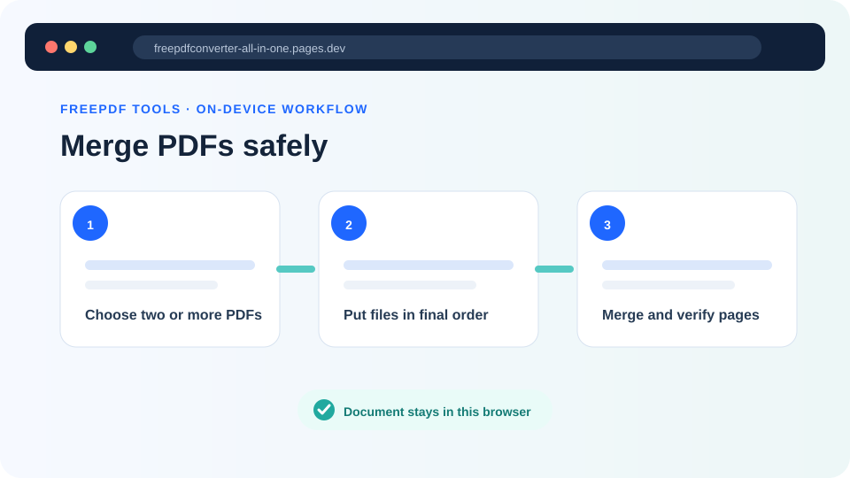
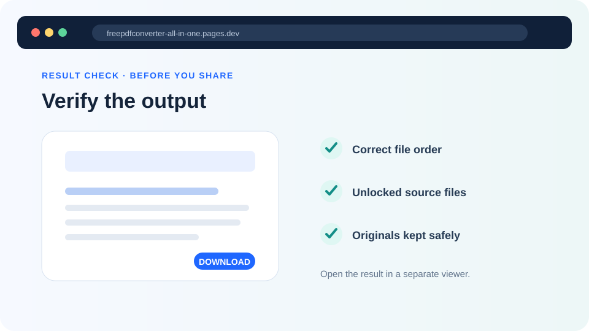

How to keep PDF quality when combining files
Merging PDFs normally changes the document container rather than deliberately reducing image quality. Problems are more often caused by the original files, re-rendering or a later compression step.
Updated September 28, 2026 · FreePDF Tools
Understand what a merge does
A merge places pages from multiple PDF inputs into one PDF. It does not need to turn every page into a screenshot, so selectable text and vector content can remain intact.
Image-heavy pages are different
Scanned documents and photographs already contain compressed raster images. The visual quality you start with therefore matters more than the merge operation itself.
Avoid unnecessary conversion chains
Repeatedly converting a PDF to images and back to PDF can rasterize text and increase file size. When possible, merge the original PDFs directly.
Check the final document
Open a few pages from each source and compare small text, diagrams, signatures and photographs. Also verify that the page dimensions and orientation remain consistent enough for the intended use.


Merge the original PDFs
Keep the source pages as PDF pages rather than rendering them to screenshots first.